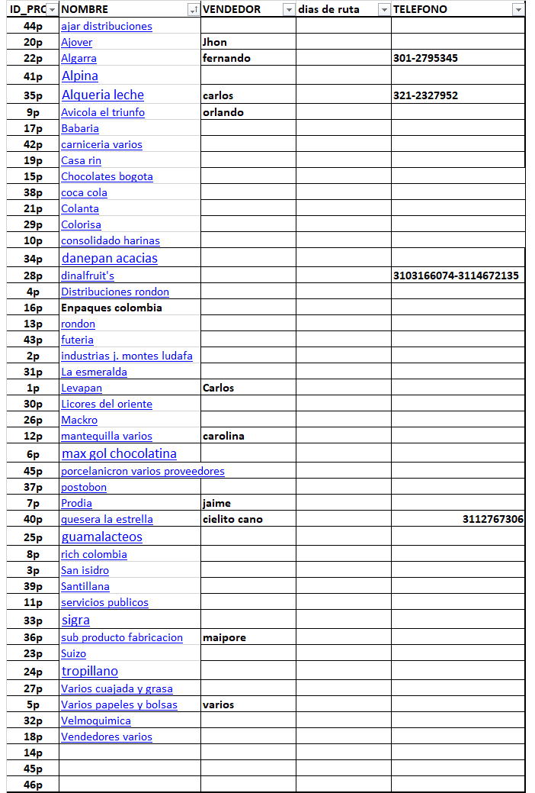

Proveedor
En este sección irían tanto el ingreso de un nuevo proveedor como la selección de presentación individual o en grupo de proveedores, esta ira con datos de fecha de pedido y de entrega.
Destinado a investigación mercado
Algunas recetas de interes subidas
Consejos de temperatura y almacenamiento
Curiosidades para la panificación